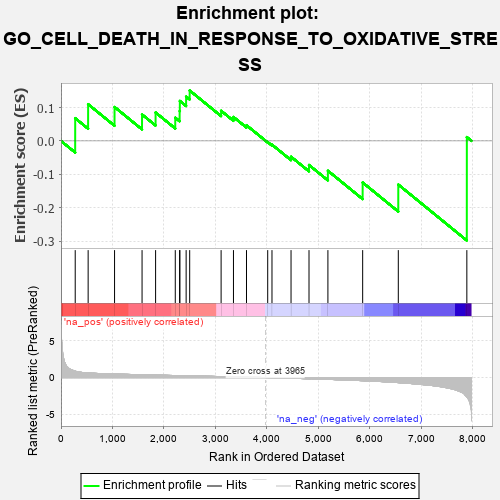
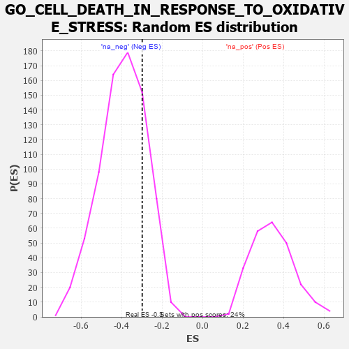

| | | Dataset | 7d |
| Phenotype | NoPhenotypeAvailable |
| Upregulated in class | na_neg |
| GeneSet | GO_CELL_DEATH_IN_RESPONSE_TO_OXIDATIVE_STRESS |
| Enrichment Score (ES) | -0.2979451 |
| Normalized Enrichment Score (NES) | -0.7553094 |
| Nominal p-value | 0.77807134 |
| FDR q-value | 0.9963935 |
| FWER p-Value | 1.0 |
Table: GSEA Results Summary

Fig 1: Enrichment plot: GO_CELL_DEATH_IN_RESPONSE_TO_OXIDATIVE_STRESS
Profile of the Running ES Score & Positions of GeneSet Members on the Rank Ordered List
| PROBE | GENE SYMBOL | GENE_TITLE | RANK IN GENE LIST | RANK METRIC SCORE | RUNNING ES | CORE ENRICHMENT | | 1 | HGF | | | 276 | 0.870 | 0.0679 | Yes |
| 2 | HTRA2 | | | 527 | 0.621 | 0.1097 | Yes |
| 3 | AKT1 | | | 1040 | 0.476 | 0.1014 | Yes |
| 4 | FZD1 | | | 1574 | 0.379 | 0.0790 | Yes |
| 5 | GATA4 | | | 1837 | 0.330 | 0.0851 | Yes |
| 6 | TRAP1 | | | 2219 | 0.274 | 0.0694 | Yes |
| 7 | GSKIP | | | 2304 | 0.259 | 0.0894 | Yes |
| 8 | REST | | | 2308 | 0.259 | 0.1196 | Yes |
| 9 | MET | | | 2430 | 0.240 | 0.1326 | Yes |
| 10 | MELK | | | 2499 | 0.227 | 0.1508 | Yes |
| 11 | GPX1 | | | 3109 | 0.135 | 0.0902 | No |
| 12 | TLDC2 | | | 3349 | 0.097 | 0.0716 | No |
| 13 | STK25 | | | 3602 | 0.059 | 0.0469 | No |
| 14 | PARP1 | | | 4014 | -0.010 | -0.0036 | No |
| 15 | PDE8A | | | 4097 | -0.023 | -0.0112 | No |
| 16 | LRRK2 | | | 4467 | -0.087 | -0.0473 | No |
| 17 | FBXW7 | | | 4816 | -0.161 | -0.0720 | No |
| 18 | HDAC6 | | | 5183 | -0.244 | -0.0892 | No |
| 19 | ATG7 | | | 5858 | -0.420 | -0.1244 | No |
| 20 | STK24 | | | 6550 | -0.684 | -0.1307 | No |
| 21 | FYN | | | 7881 | -2.622 | 0.0113 | No |
Table: GSEA details [plain text format]

Fig 2: GO_CELL_DEATH_IN_RESPONSE_TO_OXIDATIVE_STRESS: Random ES distribution
Gene set null distribution of ES for GO_CELL_DEATH_IN_RESPONSE_TO_OXIDATIVE_STRESS